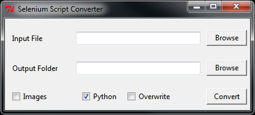

Selenium Wrapper is a project designed to make WebDriver-based Selenium more feasible for load testing. Using PhantomJS and GhostDriver, it can spawn off as many child processes running provided test suites as your processor can handle. These test suites are optimized for sites becoming slow and not responding, and wait for elements to appear with minimal CPU usage (unlike native WebDriver). Unlike stock Selenium, this wrapper also offers logging capabilities, automatic screenshots, and launching arbitrary numbers of tests running simultaneously from one window.
Selenium Wrapper is composed of two related components. The first component used and seen is the converter. The converter is used to take a Selenium IDE-exported Python WebDriver script and convert it for usage with the wrapper, the second component. The wrapper is as described above, a framework making load testing possible with Selenium. The converter creates a folder which contains the wrapped script and can be transported between any number of computers.
When initializing a brand new installation and not having a prepackaged converter, first checkout the repository:
git clone https://github.com/brhoades/selenium_wrapper.git
Install Ruby and then the appropriate ActiveTCL library for your version. After installing, navigate to the directory cloned into and run:
bundle install
This will install the Ruby gems required for the converter to function.
Prepare a python installation for the converter program. Python 2.7.8 is the supported Python version. Now install Python for the correct platform.
pip install selenium
Also install the latest version of PhantomJS for your platform.
Currently a distributed setup where a separate install of Python is shipped with each script is only possible for Windows. For other operating systems, there will need to be a system wide installation on every machine participating. For these other operating systems ensure that the “Python” option is unchecked on the converter.
Perform an installation of Python into the default folder. The fewer modules that are included, the better. Excluding lib-tk, documentation, and testing suites will streamline things. This folder will later be copied to the correct spot.
Install pip into your Python installation and now install the module for Selenium:
pip install selenium
Now install the curses extension package.
Afterwards copy/move the Python folder that was just created to conversion_utils/python27. Extract the phantomjs-release.zip for Windows into the Python folder as well.
Now run the conversion program:
ruby main.rb
The converter main.rb or selenium_convert.exe will launch after about 15 seconds (results may vary). This converter has the files necessary to create a portable Python installation with Selenium and PhantomJS.
Browsing to a file will automatically choose a directory with the matching name to output to in out/. If the file is properly exported from selenium, it will be converted into a wrapped script. There are several options which will augment the way the wrapper runs.
After selecting your input Python file and (optionally) your output folder, hit convert.
Conversion will take a while. It will initialize a new directory, copy a slimmed down Python install into it, and then convert the script into a form which utilizes the included Selenium wrapper. Once finished, it will prompt you to tell you so. Progress can be monitored in the black terminal that opened when the exe/script was initially ran.
Conversion will automatically strip any assertions or clears from the script provided. Assertions are not currently supported as the wrapper does not currently wrap itself in a unit testing suite. Any driver.find_element_by(...).send_keys( "text" ) is wrapped into a sw.utils.sendKeys() function. This eliminates the need for a .clear( ) statement and saves time. Conversion also replaces any find_element_by_ segments with sw.utils.sleepwait() which is a controlled (and CPU-optimized) function to wait for an element.
There are directives which may be inserted into the source script’s function which will be parsed by the converter into wrapper functions. Variables can be used in their arguments as the converter turns the directives into functions after conversion.
By including at the top of your script #OPTIONS with a following comment block, the converter will parse options into the output script:
#OPTIONS
#gd option="text"
#import module
The wrapper is automatically applied to the source script when the converter finishes. It is intended to be as transparent as possible after conversion, requiring minimal user interaction to get it running. Below is a real test run of a script:
.../out/example_script>run.bat
You may press enter to use the default values in parenthesis.
Number of Children (3): 3
Number of Jobs to Run (3): 3
Stagger Children Spawning (n): n
Libraries loaded!
========================================
Preparing 3 children to do 3 jobs.
Child #1: LOADING
Child #2: LOADING
Child #3: LOADING
Child #3: STARTING
Child #2: STARTING
Child #1: STARTING
========================================
Successful: 0 Failed: 0
Total: 0 Remaining: 3
Children (peak): 3 Children (active): 3
No data to extrapolate or average from
========================================
Child #2: DONE (141.88s)
Child #2: STOPPING (DONE)
Child #3: DONE (142.62s)
Child #3: STOPPING (DONE)
Child #1: DONE (149.2s)
Child #1: STOPPING
========================================
Successful: 3 Failed: 0
Total: 3 Remaining: 0
Children (peak): 3 Children (active): 0
Failure Rate: 0.0%
Average / Estimates:
Time per job: 144.57s
Jobs/s: 0.02 Jobs/m: 1.21 Jobs/hr: 72.35 Jobs/day: 1736.39
========================================
Press any key to continue . . .
Running run.bat on Windows will present the user with questions for how the script will operate. It simply passes arguments on to run_test.py, with the order discussed below.
Number of Children (3): 3
The number of children determines the number of concurrent PhantomJS processes the script will run. Although the default number is 3, users with a more powerful processor will find themselves capable of running over 20, though this varies wildly with the script ran. This is largely dependent on processing power but about 50-70 Mb of RAM is used as well.
Number of Jobs to Run (3): 3
The jobs option determines the number of times the recorded script will run. Every child process will pull from a job queue (of this length) when it starts and will do so until the queue is empty
Stagger Children Spawning (n): n
The last option, staggered child spawning, is intended to distribute load throughout a site more evenly. Without staggering and with a high number of children, the load will be very pinpointed at an exact point of the site consistently, at least at the beginning. This options spawns children 5 seconds apart.
The options used in the example are equivalent to just running this:
python out/example_script.py
It pulls the default options internally for the script.
Standard argument order and format is like so:
python out/example_script.py <number of jobs> <number of children> <staggered (y/n)>
Logging is automatically performed and there is currently not an option to turn it off. All logs are within a timestamped folder in logs/. Each child will create its own log in logs/<timestamp>/log-#.log, where the number is the child’s number printed to the console. This log will contain detailed information about errors, time taken, and the status of the script. Logging level is not currently easily configurable, but can be seen in conversion_files/includes/libs/sw/child.py:
# Logging level
self.level = self.options.get( 'level', NOTICE )
# Storage for our function we get
self.func = None
# How long we sleep in loops
self.sleepTime = 1
There are several levels as seen in conversion_files/includes/libs/sw/const.py:
####################################################################################################
# Error Log Levels
# Error log levels are used to mark a message as a certain category, then output it if that level
# of detail is requested.
INFO = -1
DEBUG = -1
NOTICE = 0
WARNING = 1
ERR = 2
With the lowest log level, INFO, this is an example of a log that is prepared:
[15:37:14] (NOTICE) Child process started and loaded
[15:37:20] (NOTICE) Beginning wait for element "accounts" of type "link_text".
[15:37:35] (NOTICE) Beginning wait for element "OrderPage_Row_6" of type "name".
[15:37:42] (NOTICE) Beginning wait for element "clear_overlay" of type "id".
[15:37:46] (NOTICE) In waitToDisappear "clear_overlay" was never there to begin with.
[15:37:46] (INFO) Waiting for "clear_overlay"
[15:37:49] (INFO) Element "clear_overlay" disappeared!
[15:37:50] (NOTICE) Beginning wait for element "clear_overlay" of type "id".
[15:37:54] (NOTICE) In waitToDisappear "clear_overlay" was never there to begin with.
[15:37:57] (NOTICE) Beginning wait for element "AmountPage_Row_27" of type "name".
[15:38:02] (INFO) Waiting for "clear_overlay"
[15:38:04] (INFO) Element "clear_overlay" disappeared!
[15:38:05] (NOTICE) Beginning wait for element "clear_overlay" of type "id".
[15:38:08] (NOTICE) In waitToDisappear "clear_overlay" was never there to begin with.
[15:38:08] (INFO) Waiting for "clear_overlay"
[15:38:10] (INFO) Element "clear_overlay" disappeared!
[15:38:10] (INFO) Waiting for "clear_overlay"
[15:38:13] (INFO) Element "clear_overlay" disappeared!
[15:38:13] (NOTICE) Beginning wait for element "clear_overlay" of type "id".
[15:38:16] (NOTICE) In waitToDisappear "clear_overlay" was never there to begin with.
[15:38:17] (INFO) Waiting for "clear_overlay"
[15:38:19] (INFO) Element "clear_overlay" disappeared!
[15:38:19] (INFO) Waiting for "clear_overlay"
[15:38:21] (INFO) Element "clear_overlay" disappeared!
[15:38:22] (NOTICE) Beginning wait for element "clear_overlay" of type "id".
[15:38:25] (NOTICE) In waitToDisappear "clear_overlay" was never there to begin with.
[15:38:25] (INFO) Waiting for "clear_overlay"
[15:38:27] (INFO) Element "clear_overlay" disappeared!
===================== <More Waiting>
[15:39:18] (INFO) Waiting for "clear_overlay"
[15:39:25] (INFO) Element "clear_overlay" disappeared!
[15:39:36] (NOTICE) Successfully finished job (141.878000021s)
[15:39:36] (NOTICE) Stopping child process: "DONE"
On the lowest log level, the wrapper gives a great deal of information about where it is waiting for debugging purposes. Waits are only documented if they are engaged; if an element can already be selected, no time is wasted waiting and the script directly interacts with it. The timestamp on the far left is the exact time in which the message was printed, the next field is the log level that this was printed at— if child.level were greater than this, it wouldn’t print. The final field is the message itself.
Also placed within the log directory are any screenshots that were taken either as a directive within the script or for an error. Any time a screenshot is created, it is noted in the respective child’s log file where it was stored and at what time. For example, here is a log where an error was encountered:
[14:15:48] (NOTICE) Child process started and loaded
[14:15:52] (NOTICE) Beginning wait for element "Accounts" of type "link_text".
[14:15:57] (NOTICE) Choosing grower #16
[15:37:57] (NOTICE) Beginning wait for element "AmountPage_Row_27" of type "name".
[14:16:07] (ERROR) 'sleepwait() takes exactly 3 arguments (4 given)'
[14:16:08] (ERROR) Wrote screenshot to: /home/test/script_converter/out/test_script/logs/2014-08-26_14-15-45/error_0.png
[14:16:08] (ERROR) Stack trace: Traceback (most recent call last):
File "/home/test/script_converter/out/test_script/includes/libs/sw/child.py", line 144, in think
func( self.driver )
File "/home/test/script_converter/out/test_script/run_test.py", line 30, in test_func
waitToDisappear( driver, 'AmountPage_Row_27' )
File "/home/test/script_converter/out/test_script/includes/libs/sw/utils.py", line 212, in waitToDisappear
sleepwait( driver, element, type, kwargs )
TypeError: sleepwait() takes exactly 3 arguments (4 given)
[14:16:08] (NOTICE) Stopping child process: "RESTARTING"
The highlighted line shows where the screenshot was written to, error_#.png. Every new error increases #.